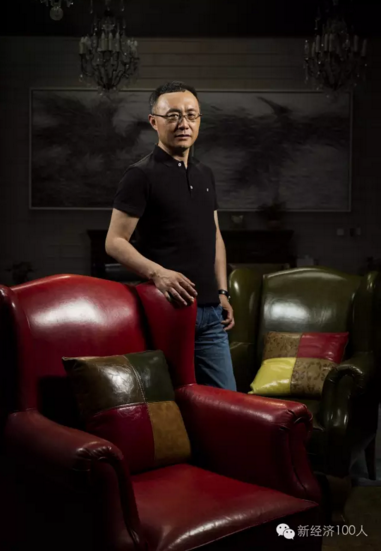

传统和互联网的结合，几乎是未来每一家公司的必经之路。内容公司直接越过传统媒体，和最先进的媒体渠道合作。中国未来的娱乐集团，会是由两部分组成：一种是互联网公司，比如说BAT之类，从互联网角度切入；另一种是，传统的内容公司、渠道公司和互联网结合。

（光线传媒董事长王长田）
2016 年5月底光线传媒发布公告，宣布光线控股拟以其持有的176,016,506股光线传媒股份为对价换取三快科技持有的猫眼28.80%的股权。光线控股拟 向上海三快支付8亿元现金对价购买其持有的猫眼9.60%的股权，光线传媒拟向上海三快支付15.83亿元现金对价购买其持有的猫眼19.00%的股权。 本次交易完成后，光线控股持有猫眼38.40%股权，光线传媒持有猫眼19.00%股权，上海三快持有猫眼32.6%股权。
走进写着光线影院的中式矮层建筑，迎面而来的是光线投拍的各种电影海报，穿过明亮的休闲区，路过带有欧式皮质沙发、水晶灯的房间，随处可见各式茶叶、茶具，「新经济100人」来到了王长田的会客室。

在接受「新经济100人」近两个小时的独家专访时，王长田身着黑色Polo衫，青色牛仔裤，带着无框细腿眼镜，没有多余装饰，只有一块表孤独地绕在手腕上。
王长田的发际线微高，额前的一小撮头发仔细地排着。讲话时，声音不疾不徐，好像所有的话都经过深思熟虑。

（采访场景）
1、新经济100人：什么时候开始谋划这次并购？
2015年上半年，猫眼想做融资，我们就特别有兴趣，一直在谈，到下半年我们的态度就比较明确了，希望是大比例的投资或者并购。王兴是冷静、谨慎、有大局观的创始人，在没有特别想清楚猫眼走向、没有了解清楚电影行业未来发展趋势前，他不会轻易做决定。
光线能投资猫眼，最主要的原因是王兴关注猫眼未来在中国电影行业的地位，在现有基础上加入什么样的资源能够走得更远。
猫眼如果是纯粹的售票网站，生命力很难持久，我和王兴达成了共识，猫眼必须向上游走，变成内容公司，具备发起投资、制作电影、宣传发行电影的能力，用猫眼平台来打通电影上下游产业链。
谈判中最大的问题是方向，作价多少是最后才谈的，价格不是大问题。
2、新经济100人：控股后的猫眼还是一家独立公司吗？
它是独立公司。如果中国未来也有六大电影公司的话，我希望猫眼是其中一家，光线也是其中一家。
两者互相独立又互相关联，有一定竞争，也会进行紧密的合作。猫眼独立运营，自主管理，独立融资，独立投资，也包括一种可能性，独立上市。
3、新经济100人：如何看待猫眼和光线未来可能的合作与竞争？
电 影市场相对分散，就算中国未来出现六大电影公司，可能占据80%市场份额，但很难一家就占到40％以上市场份额。占到30%都是非常困难的。内容是和人、 创意打交道，很难一家垄断所有内容。你面对的竞争对手是其他5家，还包括更小的公司，而不是说，你只面对一家竞争对手。
光线也好，猫眼也好，未来面对的是相对分散的竞争，所以光线和猫眼之间有竞争也不怕，要让这两家公司发展更好，需要竞争，当然也需要合作。
这次投资猫眼就是出于合作的考虑，猫眼要往上游走，项目的发起需要原创和IP储备，项目的投资和制作管理也需要自己把握关键环节，例如导演、演员的选择，后期的剪辑等。接下来是宣传和发行，综合性的电影公司会覆盖整个链条。
猫眼的优势在于售票平台以及积累的用户，和影院的关系。但往上游走，光有这些是不够的，你做影院就一定懂电影的投资和制作吗？
项目投资需要判断力，90%的项目都是亏损的，如何投到那10%的项目，这是个很大的问题。哪些题材能拍，在什么时候，用多大的投资去拍，猫眼从没有介入过电影的制作环节。宣传和发行，他们参与了一些，但跟光线这样的电影发行公司相比，经验不够。
我们不排除同档期两家公司都有电影上映，也不排除一些影片联合发行，一个好档期能够容纳多部好电影的。就算我们不竞争，我们也得跟别人竞争。
我们马上可以进行联合发行，目的是把市场做得更大，但我们没有把这件事局限在用猫眼补足光线的短板，或者用光线补足猫眼的短板。我们希望两家公司各自有自己的极大竞争力，两家公司未来的走向是综合性电影公司。
美国六大电影公司各有各的优势，迪士尼有动画衍生品的开发，福克斯有电视剧制作，华纳在大片制作上。猫眼有线上的优势，光线有传统的优势，要做的事情是殊途同归。
如果把猫眼和光线绑在一起的话，格局就小了。
4、新经济100人：光线控股猫眼会不会影响猫眼和其他影视公司的合作？
从竞争的角度推断，可能是有这种顾虑，但这是心理因素，不是商业因素。真正的商业因素是看谁能增值，就是利益。心理因素一定会让位于商业因素。
当然为了避免心理因素的影响，猫眼要独立发展，自己做决策，决策的依据是商业利益最大化。
如果一家公司每天只从心理出发，把商业价值放在第二位，这种公司不合作也罢，不可能做好。
在重大档期，我们两家同时各自发行片子的时候，大家会看到我们的实际行动，我们也在竞争，你不跟自己竞争，也得跟别人竞争。
5、新经济100人：猫眼原团队会有哪些变化？
首先，我们安排了员工持股，这其实付出相当大的代价，因为猫眼很大了，价格也很高。猫眼团队是现在所有售票网站里，素质最高、经验最丰富的团队。
我非常认可他们，我相信他们对电影行业的了解，在所有售票网站中也是最好的。
我们现在会花费比较多的精力，帮猫眼看项目，购买行业资源，或者和它一起拿下项目。猫眼要主控一部影片的投资发行，在行业内信任度不足够，有光线的帮助，信任度就提高了。
猫眼首先是非常好的互联网公司，互联网基因完整得到保存。这跟王兴有关，我觉得美团也是非常好的互联网公司，企业文化、产品、技术的竞争力都非常好，这些延伸到猫眼。
我对猫眼团队没有信心的话，我绝对不敢投资猫眼。我自己管理不了猫眼，客观来讲，光线没有任何一个人能全面管理猫眼。但我们帮助猫眼没有问题。
6、新经济100人：猫眼新任CEO郑志昊是什么样的人？
（郑志昊）
他是非常资深的互联网专家。他是有点下嫁到猫眼。王兴舍不得他，他说，我心里非常纠结，让一个人到猫眼做CEO。我对王兴说，我们有共同利益，猫眼也需要这样一个人。
王兴一开始没有告诉我名字，简单描述了一下他的经历，我们很快搞清楚了他是谁。
我们觉得不行，这个人必须来猫眼，王兴也大度地让步了。
郑志昊学习能力很强，把猫眼的数据、商业模式、未来发展战略，包括预算，都搞得很清楚。他增强了我们对猫眼的信心，某种意义上，也让这次交易双方更加坚决果断。
7、新经济100人：为什么猫眼选择了光线？
王兴创立猫眼，把它做大，通过猫眼这块敲门砖进入文化娱乐领域的核心——内容的生产和发行。我们的交易结构，新美大持有一部分猫眼股份，同时也是光线股东，光线是文化娱乐领域的核心公司之一，通过猫眼他得到了更大的平台。
新美大需要猫眼，无论是流量入口，还是提供用户所需服务，交易后猫眼继续留在新美大，性质没有真正改变。光线也需要猫眼的流量和资源。
猫眼如果要继续发展，要扩大它的流量和影响力，需要大量资金和资源的投入。从资金的角度来说，原来新美大投了很多钱进来，继续投钱未必是最好的选择，投了钱未必就一定能得到资源。它需要外部的资源介入，让业务持续发展，减少投入，同时继续保有业务的价值。
我们也为猫眼打开了一条新的路，让它的商业模式变得更加清晰，让未来猫眼的盈利能力提高了。
8、新经济100人：如何看待这次控股猫眼后外界的看法？
我跟外界交流很少，王兴和我很像，我们都是内敛、低调、做实事的公司，不特别看重中短期利益，愿意看长远利益。这是我们合作的基础。
很多人不了解我的运作思路。我不投资的时候他们说，你看光线自己关起门来做。后来我做投资了，他们又说，你看你投的公司太小了，太保守了。这次投了猫眼，有人又说是太胆大了。
他 们不了解一个公司创始人真正想法是什么，每一步都是为下一步做准备。光线要成为真正的传媒娱乐集团，必须有内容有渠道，内容有不同细分领域的，渠道也有多 种渠道构成。几年前我说光线不会轻易去投资影院，如果要投资的话，网上售票更值得投资。那时候我完全看不到这样的机会，但我已经有这样的想法。互联网趋势 越来越明显，我无非是在等待一个机会。
我会十年前、五年前想一件事，念念不忘，到十年后、五年后真的做成了。只不过我不知道什么时间点发生，用什么样的方式，跟谁，用多大的代价。
我也看到资本市场没有对这次收购特别正面的反馈，可能大家担心打补贴战，你能不能打。他们低估了光线的能力，真的要打，光线也不是没有实力打的公司，我们只专注电影，不像其他家钱洒到各个领域。在电影这个细分领域，我们投的钱不比任何一家少。
不过，现在大家都不想打补贴战了，我预计今年的补贴总额连去年的一半都到不了。
价格主要影响新用户。从一个新用户变成一个正常用户，他对价格的敏感度
是降低的。产品的改进和服务体验的改善，这个才是根本。
光线股价的表现，也表明了光线的文化，包括新美大的文化，跟市场氛围是有比较大反差的。大家希望炒作，希望推广，但我们又不是那种公司，所以短期之内大家需要一个观察，看你到底怎么样。
9、新经济100人：如何保证投资项目90%的成功率？
这个事情有经验和感觉的因素。1999年第一个节目《中国娱乐报道》开播，从那个时候开始，我们就在观察娱乐界，参与娱乐界，我们见证了整个娱乐内容发展的各个阶段。所以人、产品、公司，我们观察得比较透彻，在这个过程中积累了很多经验。
第二，光线对创新，对年轻人，对新的潮流，包括新的生活方式的观察，我觉得是所有电影公司里面最佳，最敏感的。因为做电影，我们实际上做的时间也不短了，也有10年时间，如果我们不能一直往前看，看到新的东西，那光线现在也已经变成一个老公司了。
这个行业里面最怕老，一老就死掉了。之所以光线后来居上，是我们一直保持新的状态，我们为年轻人制作电影，用年轻人导演电影，选年轻人喜欢的题材。
当然还有标准的问题。光线早期电影投资的标准相对比较低，从剧本，到演员、剪辑，最后影片出来的质量，那个时候给我们带来一些烂片，也遭到比较多的诟病。但是从2011年开始，我们就全面扭转了这个局势，提高影片的标准，适销对路的同时，品质也不断提升。
选 择最好的题材，储备最好的IP，找最有才华最认真的人去合作，然后做最好的宣传发行。它是全面的能力建设，这才叫综合电影公司。如果你只是做某一方面，比 如说你做一个特效公司，那你就好好做特效，什么事都不用管。但如果你要做一个综合公司，每一个方面都要强，而且都要比行业最强的那些人强。你不是跟后面那 些人比，你是在跟前面的人比。
10、新经济100人：如何看待互联网对电影行业的影响？
互联网以前是少数人的游戏，他们通过对技术的了解，形成了竞争优势。现在互联网越来越普及，从业公司都逐渐具备互联网意识，互联网也没那么神秘了，已经是普通工具。光线，包括我在内，对互联网的理解和前几年不能同日而语了。
传统和互联网的结合，几乎是每一家公司的必经之路。
美 国的传媒娱乐集团都是内容加渠道。在上个阶段，最重要的渠道是电视。在中国，我们没有办法形成美国那样的传媒娱乐集团。但互联网起来之后，就有机会了。接 下来，中国传媒娱乐业，内容公司直接越过传统的媒体，和最先进的媒体渠道合作。中国未来的大传媒娱乐集团，会是由两部分组成：一种是互联网公司，比如说 BAT之类，从互联网角度切入；另一种是，传统的内容公司、渠道公司和互联网结合。
很多人担心，未来所有的影视娱乐公司给互联网打工，我倒不这么看，BAT有资金实力和用户资源。但用户是流动的，钱不能解决所有问题，大数据不能替代人的智力和判断。
原有的内容公司或者传统公司也有自己的优势，只要做得好，钱是有的，只要是好项目，别人想投我，根本不需要你。
就算你有钱，有数据有用户，如果你在这个领域不能按照这个领域的规律去做，你也完全有可能做成一个小公司。BAT在传媒娱乐行业一定是大公司吗？但当你进入到一个新领域，尤其是内容领域的时候，你是不是能做大，还是未知数。
- 推荐图文
- 推荐人物
- 推荐企业